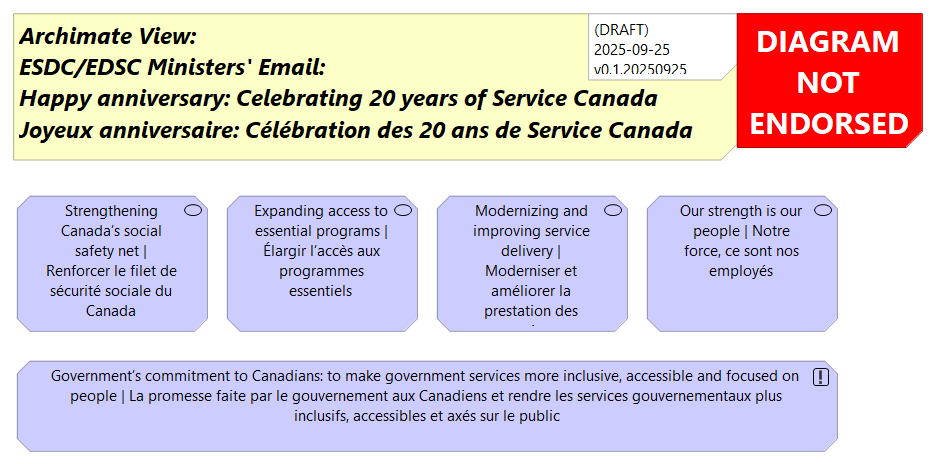

Joyeux anniversaire : Célébration des 20 ans de Service Canada / Happy anniversary: Celebrating 20 years of Service Canada
From: Ministres / Ministers (EDSC/ESDC)
Sent: September 25, 2025 1:37 PM
Subject: Joyeux anniversaire : Célébration des 20 ans de Service Canada / Happy anniversary: Celebrating 20 years of Service Canada
(English follows the French)
Légende : Message de la ministre – Un message pour les employés d’EDSC
Chers collègues,
Il y a 20 ans cette semaine, le gouvernement fédéral a pris une grande décision : créer Service Canada, en tant que point d’accès unique où les Canadiens pourraient recevoir un vaste éventail de prestations et de services gouvernementaux conçus pour les aider à traverser toutes les étapes de la vie.
Depuis 20 ans, Service Canada remplit cette mission, et en a fait bien plus encore. Par téléphone, en personne dans les Centres Service Canada, aux sites de services mobiles dans les communautés, et dans les coulisses de nos centres de traitement, Service Canada a été une présence fiable dans tout le pays, jour après jour, même dans les circonstances les plus difficiles. Les exemples suivants ne sont que quelques-unes des façons dont Service Canada change la donne :
Renforcer le filet de sécurité sociale du Canada
Personne ne devrait être laissé pour compte dans notre pays. Service Canada joue un rôle essentiel pour éliminer les obstacles et créer des possibilités économiques pour tous. C’est pourquoi, à un moment où faisons face aux graves conséquences de la guerre commerciale avec l’un de nos plus importants partenaires commerciaux, l’assurance-emploi demeure la pierre angulaire du filet de sécurité sociale du Canada en soutenant les travailleurs lorsque survient une perte d’emploi, un congé parental ou une maladie ou lorsqu’ils doivent assumer des responsabilités d’aidant naturel.
Élargir l’accès aux programmes essentiels
Service Canada continue d’élargir l’accès à des programmes essentiels qui favorisent la santé et le bien-être financier des Canadiens. Le lancement du Régime canadien de soins dentaires a ouvert la voie à des soins dentaires abordables aux personnes admissibles à travers le pays. Plus récemment, Service Canada a amorcé le traitement des demandes pour la Prestation canadienne pour les personnes handicapées, qui offre du soutien financier direct aux personnes en situation de handicap.
Ce travail va au-delà de l’équité, il s’agit de créer un véritable changement, de favoriser l’autonomie des individus et d’aider les Canadiens à bâtir un avenir plus solide en leur permettant de s’épanouir pleinement.
Moderniser et améliorer la prestation des services
À mesure que les besoins des Canadiens évoluent, Service Canada a élargi son offre afin de fournir du soutien plus accessible et plus réactif. L’une des principales avancées a été l’amélioration des outils libre-service pour les clients de la Sécurité de la vieillesse (SV). Aujourd’hui, plus de 7,4 millions de Canadiens peuvent demander des prestations de la SV en ligne, mettre à jour leurs renseignements personnels, télécharger des documents et accéder à leurs relevés fiscaux ou les télécharger, le tout grâce à un service numérique simplifié.
Notre force, ce sont nos employés
Que ce soit en offrant du soutien à des millions de Canadiens, en assurant l’accès à des prestations et services ou en retroussant nos manches en situation de crise nationale comme la pandémie de COVID 19, les employés de Service Canada sont toujours à la hauteur de la tâche par leur dévouement, leur compassion et leur professionnalisme.
Ce 20e anniversaire, c’est davantage qu’un chiffre. C’est l’occasion de rendre hommage aux personnes qui œuvrent dans l’ombre du nom de Service Canada, aux personnes qui travaillent, jour après jour, pour offrir aux Canadiens le soutien dont ils ont besoin. L’engagement à servir le public n’est pas toujours facile à respecter, mais d’avoir la confiance des Canadiens au quotidien est une récompense plus que suffisante.
Notre objectif pour l’avenir : renforcer la promesse faite par le gouvernement aux Canadiens et rendre les services gouvernementaux plus inclusifs, accessibles et axés sur le public.
La contribution que vous apportez est inestimable et instrumentale au succès du Canada, génération après génération.
Merci pour tout votre travail et bravo pour ces 20 années au service de notre pays et de nos collectivités.
L’honorable Patty Hajdu
(Elle)
La ministre de l’Emploi et des Familles et ministre responsable de l’Agence fédérale de développement économique pour le Nord de l’Ontario
Ce message a été approuvé par EDSC. Visitez iService si vous êtes préoccupés par l’authenticité du message.
Caption: Minister’s Message – A message for ESDC employees
Dear colleagues,
Two decades ago, the federal government took an important step to establish Service Canada as a single point of access where Canadians could receive a wide range of government benefits and services designed to support them through life’s many transitions.
For 20 years, Service Canada has fulfilled that mission—and done so much more. By phone, in-person at Service Canada Centres, at community outreach sites, and behind the scenes in our processing centres, Service Canada has been a reliable presence across the country—day in and day out—even in the most challenging circumstances. The following examples highlight just some of the ways Service Canada is making a difference:
Strengthening Canada’s social safety net
Nobody should be left behind in this country. Service Canada’s role is critical in breaking down barriers and building economic opportunity for all. That is why, as we’re navigating the serious consequences of the trade war with one of our most important trade partners, Employment Insurance (EI) remains a cornerstone of Canada’s social safety net, supporting workers through job loss, parental leave, illness and caregiving responsibilities.
Expanding access to essential programs
Service Canada continues to broaden access to vital programs that support Canadians’ health and financial well-being. The launch of the Canadian Dental Care Plan has opened the door to affordable dental care for eligible individuals across the country. More recently, Service Canada began processing applications for the Canada Disability Benefit, delivering direct financial support to persons with disabilities.
This work goes beyond fairness—it’s about creating meaningful change, empowering individuals, and helping Canadians build a stronger future by unlocking their full potential.
Modernizing and improving service delivery
As Canadians’ needs continue to evolve, Service Canada has expanded its offerings to provide more accessible and responsive support. One key advancement has been the enhancement of self-serve tools for Old Age Security (OAS) clients. Today, more than 7.4 million Canadians can apply for OAS benefits online, update personal information, upload documents and access or download their tax slips—all through a streamlined digital service.
Our strength is our people
Whether it’s providing support to millions of Canadians to ensuring access to benefits and services or stepping up during times of national crises like the COVID-19 pandemic, Service Canada employees have consistently shown that they are up to the task through their dedication, compassion and professionalism.
This 20-year anniversary goes far beyond a number, it's a celebration of the people behind the name, those who work to make sure Canadians have the support they need. Commitment to public service isn’t always easy, but earning the trust of Canadians every day makes it all worth it.
As we move forward, let’s build on the Government’s commitment to Canadians: to make government services more inclusive, accessible and focused on people.
Your contributions are highly valued and instrumental to Canada’s success, across generations.
Thank you for your work, and congratulations on 20 years of service to our country and communities.
The Honourable Patty Hajdu
(She/her/hers)
Minister of Jobs and Families and Minister responsible for the Federal Economic Development Agency for Northern Ontario
This message has been approved by ESDC. Visit iService if you are concerned about the authenticity of the message.